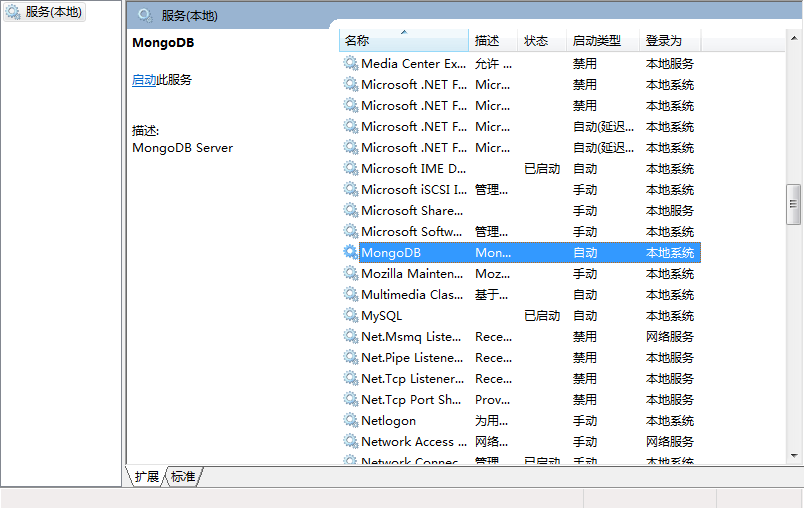

#mongodb
[TOC]
- mongodb创建
1
mongod --dbpath="mongodb安装目录\data" --logpath="mongodb安装目录\log\log.txt" --install --serviceName MongoDB --serviceDisplayName MongoDB
之后就可以在log.txt中看到1
2
3
42015-10-23T14:51:17.374+0800 I CONTROL [main] Hotfix KB2731284 or later update is not installed, will zero-out data files
2015-10-23T14:51:17.375+0800 I CONTROL [main] Trying to install Windows service 'MongoDB'
2015-10-23T14:51:17.641+0800 I CONTROL [main] Service 'MongoDB' (MongoDB) installed with command line '"C:\Program Files\MongoDB\Server\3.2\bin\mongod.exe" --dbpath=D:\mongodb\data\db --logpath=D:\mongodb\data\log\log.txt --service'
2015-10-23T14:51:17.641+0800 I CONTROL [main] Service can be started from the command line with 'net start MongoDB'
之后就可以在服务管理里面看到

可以在此手动启动，也可以在命令行窗口1
2
3
这样服务就启动了
2. 使用
cmd命令行里：
mongo //进入数据库
use hello-world //创建项目数据库
db.addUser(“shuaige”, “123456”) //给这个数据库创建了一个叫帅哥的账号，密码123456 （但是我觉得可能我理解的不到位，你也可以不做这个操作）
然后，我们就为这个hello-world数据库创建collection（collection就相当于oracle和mysql里的table）
db.createCollection(“users”) //创建一个集合，也就是表
db.users.insert({userid: “admin”, password: “123456”}) //给users里添加一个文档，也就是一条记录账号admin，密码123456
ok，现在检查一下：
db.users.find() //如果看到你刚刚添加的文档记录，就ok咯1
在models目录下创建一个user.js,作为实体类映射数据库的users集合
var mongoose = require(“mongoose”); // 顶会议用户组件
var Schema = mongoose.Schema; // 创建模型
var userScheMa = new Schema({
userid: String,
password: String
}); // 定义了一个新的模型，但是此模式还未和users集合有关联
exports.user = mongoose.model(‘users’, userScheMa); // 与users集合关联
```
- 注意：还要使用npm下载 mongoose模块